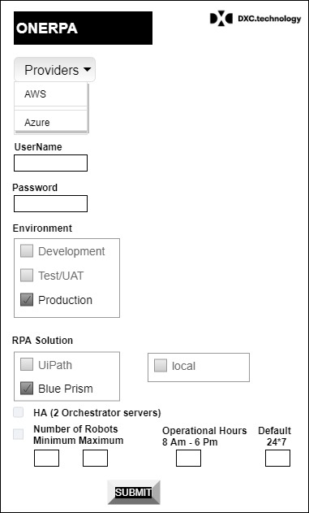
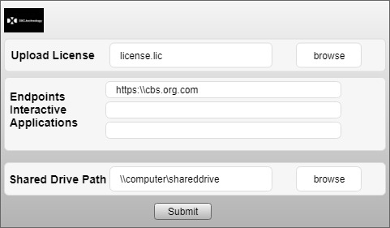

Setup Process
Windows ONERPA setup
Installation for 16-Bit Windows
- Download the setup.exe from the download links.
- Double-click the setup.exe program, which launches the installation.
- Setup begins. The first screen requires few options to select and values to pass.

The second piece requires license file , shared drive path from where the Robot needs to pick scanned files.
All the Endpoints to which Robot needs to interact.
